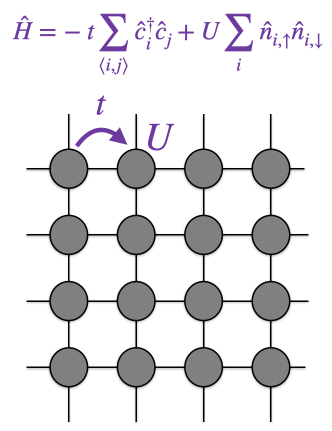

Download this notebook (.ipynb + data files)
1. Hello SAFIRE#
Goal: At the end of this tutorial, you will know how to run an AFQMC calculation using SAFIRE and extract the AFQMC energy from the output given all necessary inputs.
1.1. What You Will Learn#
what are the inputs and outputs of SAFIRE.
how to invoke the SAFIRE executable from the command line in serial, using MPI, and using GPU(s)
how to extract the AFQMC energy from the outputs of SAFIRE using safiretools
1.2. Introduction#
The purpose of this tutorial is to run a first AFQMC simulation without going into low-level details.
In order to run a simulation, SAFIRE needs at least three inputs: A Hamiltonian, a trial wavefunction, and a job file defining all run parameters. The output of a simulation is a single HDF5 file containing the Monte Carlo samples of observables such as the energy.
We will learn more about the details of all of these files in future tutorials. For this tutorial, pregenerated input files are provided together with the *.ipynb file.
1.2.1. Hamiltonian File: hamiltonian.h5#
This HDF5 file contains the second-quantized Hamiltonian \(\hat{H}\).
For this tutorial, we have supplied an HDF5 file containing the Hamiltonian
corresponding to the Hubbard model on a 4×4 lattice with periodic boundary conditions,
and \(U/t = 4\) in hamiltonian.h5.

For technical details on the Hamiltonian HDF5 format, see User Manual.
1.2.2. Wavefunction File: wavefunction.h5#
This HDF5 file contains the trial wavefunction, \(| \Psi_\mathrm{T} \rangle\).
For this tutorial, we have supplied an HDF5 file containing the free-electron (\(U = 0\)) ground state with 5 spin-up and 5 spin-down electrons as the trial wavefunction.
For technical details on the wavefunction HDF5 format, see User Manual.
1.2.3. Job File: afqmc.json#
The JSON job file sets AFQMC run parameters and references the locations of the Hamiltonian and trial wavefunction files. It is organized into a hierarchy of input blocks which each control specific details of the calculation.
For now, we focus on the wavefunction and hamiltonian blocks.
The wavefunction input block is used to tell SAFIRE where to find the HDF5 file containing the trial wavefunction.
Similarly, the hamiltonian input block is used to tell SAFIRE where to find the HDF5 file containing the Hamiltonian.
The sample JSON job file that we have provided is reproduced here.
{
"execute": {
"wavefunction": {
"filename": "wavefunction.h5"
},
"hamiltonian": {
"filename": "hamiltonian.h5"
},
"timestep": 0.01,
"steps": 10000,
"equilibration_steps": 1000,
"measure_interval": 10,
"num_walkers": 200
}
}
Notice that the wavefunction and hamiltonian input blocks point to the HDF5 files where we have saved the trial
wavefunction and second-quantized Hamiltonian, respectively.
1.3. Running SAFIRE#
Now that we have learned what the inputs of SAFIRE are, we are ready to learn how to run the SAFIRE executable given the inputs.
Because the path to the SAFIRE executable depends on your installation, in the tutorials, we will assume that you have defined the environment variable
$AFQMC_EXEC that contains /path/to/SAFIRE/build/bin/safire. So the following should print the path to SAFIRE and then display the help.
In a Jupyter notebook, the ! symbol will run commands in
a shell instead of in Python.
!echo Path to SAFIRE: $AFQMC_EXEC
!$AFQMC_EXEC --help
1.3.1. Running SAFIRE in Serial#
SAFIRE takes the JSON job file as its only positional argument,
$ $AFQMC_EXEC afqmc.json
When you run the above, an AFQMC calculation will be performed based on the contents of afqmc.json,
using the Hamiltonian and trial wavefunction specified there.
1.3.2. Running SAFIRE in Parallel#
SAFIRE can be run with MPI in the usual ways. For example, using mpirun, we could run SAFIRE with 64 MPI tasks as
$ mpirun -n 64 $AFQMC_EXEC afqmc.json
It is important to note that num_walkers in the job file is the total number of walkers
over all MPI tasks.
SAFIRE splits them evenly over the tasks, so that the walker counts of two tasks differ by at
most one.
So, running the sample job file above with 64 MPI tasks gives each task 3 or 4 of its 200
walkers.
For calculations that run on a CPU only build of SAFIRE, num_walkers is typically chosen
such that every task carries on the order of 10-50 walkers.
1.3.3. Running SAFIRE on GPUs#
To run on GPUs, you must compile SAFIRE for the GPU (See Installation for instructions).
GPU builds of SAFIRE run on the GPU by default, but using the --compute cpu command line flag, it is possible to run on the CPU without rebuilding. When running on the GPU, it is important to saturate the compute bandwidth to gain an advantage. This requires calculations on large systems or with a high number of walkers (num_walkers in the job file). For small systems, this could mean using on the order of 1000 walkers or more per GPU. For very large systems, 10 walkers per GPU may be enough.
Multi GPU calculations are supported and should use one MPI task per GPU.
1.3.4. Your Turn#
Run SAFIRE with the provided input files on 4 MPI tasks.
!mpirun -n 4 $AFQMC_EXEC files/afqmc.json
You should see the following at the top of the output after running SAFIRE.
███████╗ █████╗ ███████╗██╗██████╗ ███████╗
██╔════╝██╔══██╗██╔════╝██║██╔══██╗██╔════╝
███████╗███████║█████╗ ██║██████╔╝█████╗
╚════██║██╔══██║██╔══╝ ██║██╔══██╗██╔══╝
███████║██║ ██║██║ ██║██║ ██║███████╗
╚══════╝╚═╝ ╚═╝╚═╝ ╚═╝╚═╝ ╚═╝╚══════╝
Version: <version>
Git branch: <branch>
Git commit: <commit> (<date>)
Build type: <build type>
Features: <features>
Compute device: cpu
MPI ranks: 4
MPI nodes: 1
MPI ranks/node: 4
OMP_NUM_THREADS: 1 (default)
TBLIS_NUM_THREADS: (unset)
Congratulations, you have now run an AFQMC calculation using SAFIRE!
In the directory that you ran this notebook from, you should see a file called
afqmc.results.h5.
We will return to how to use safiretools to extract the AFQMC energy later in this tutorial.
1.4. Basic Post-Processing#
Now that we’ve learned how to invoke the SAFIRE executable from the command line in serial, using MPI, and using GPU(s), we are ready to learn how to extract the AFQMC energy from the outputs using safiretools.
The run above generated a results file, afqmc.results.h5, which contains the measurement data that was accumulated during the AFQMC simulation, including the total energy of the system.
safiretools provides the safiretools.Results class to extract this information.
from safiretools import Results
results = Results("afqmc.results.h5")
energy, energy_err = results.average("Energy")
print(f"E = {energy.real} ± {energy_err.real}")
It is a good idea to not take this value blindly but to instead inspect the Monte Carlo timeseries.
# manual
import matplotlib.pyplot as plt
plt.plot(results.timeseries("ProjectionTime"), results.timeseries("Energy").real)
plt.show()
# visualization helper
from safiretools import vis
vis.plot_timeseries(results, skip=0)
plt.show()
You should get an output compatible with Energy = -19.5801 ± 0.0023.
The time series should be converged to that energy. If it is not, we can pass the skip parameter to the safiretools.Results functions or increase equilibration_steps in the job file. Note also that the bin axis in the timeseries plot does not coincide with the number of steps. This is because SAFIRE measures only every measure_interval steps (10 in this job file). You are encouraged to play with these values and rerun the simulation.
You will learn how to measure observables other than the energy in Computing General Observables.
1.5. Summary#
In this tutorial we have learned,
what are the inputs and outputs of SAFIRE.
how to invoke the SAFIRE executable from the command line in serial, using MPI, and using GPU(s)
how to extract the AFQMC energy from the outputs of SAFIRE using safiretools
Next, we will take a more detailed look at the JSON job file in Understanding the JSON Job File.